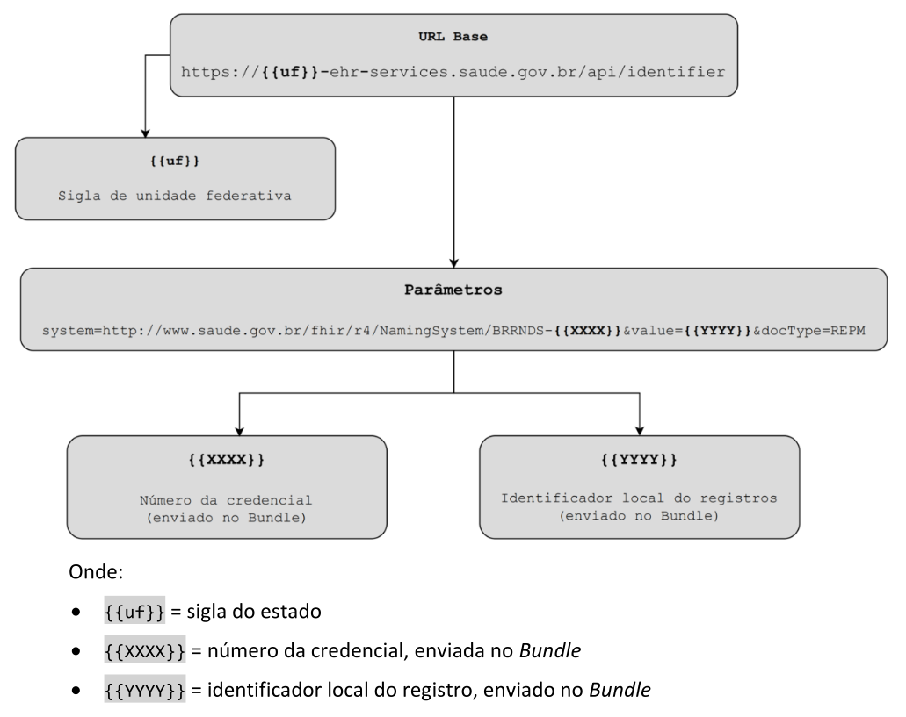
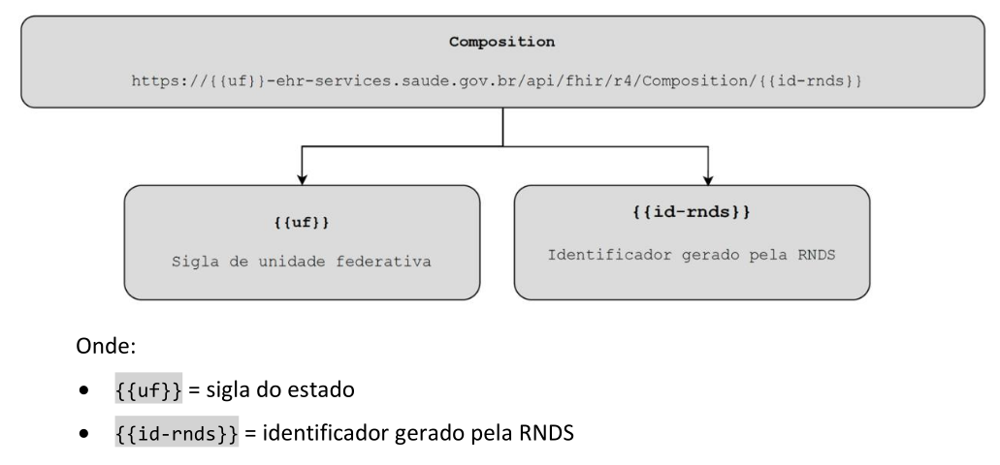
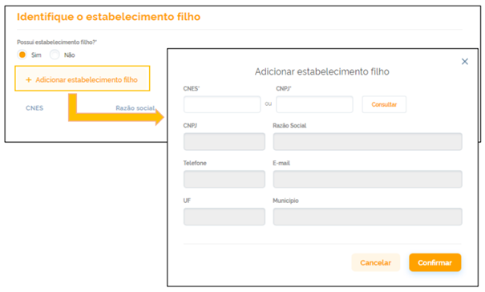
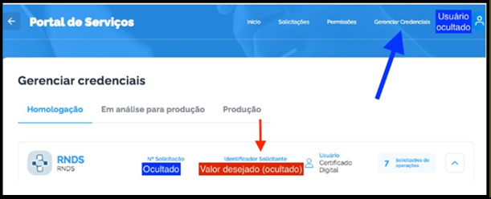

http://loinc.org
http://www.saude.gov.br/fhir/r4/CodeSystem/BRCBO
http://www.saude.gov.br/fhir/r4/CodeSystem/BRCID10
http://www.saude.gov.br/fhir/r4/CodeSystem/BRCaraterAtendimento
http://www.saude.gov.br/fhir/r4/CodeSystem/BRCategoriaDiagnostico
http://www.saude.gov.br/fhir/r4/CodeSystem/BRFinanciamento
http://www.saude.gov.br/fhir/r4/CodeSystem/BRFrequenciaUsoSubstancia
http://www.saude.gov.br/fhir/r4/CodeSystem/BRImunobiologico
http://www.saude.gov.br/fhir/r4/CodeSystem/BRJustificativaIndividuoNaoIdentificado
http://www.saude.gov.br/fhir/r4/CodeSystem/BRLocalAfericao
http://www.saude.gov.br/fhir/r4/CodeSystem/BRMedDRA
http://www.saude.gov.br/fhir/r4/CodeSystem/BRModalidadeAssistencial
http://www.saude.gov.br/fhir/r4/CodeSystem/BRModalidadeTelessaude
http://www.saude.gov.br/fhir/r4/CodeSystem/BRMotivoDesfecho
http://www.saude.gov.br/fhir/r4/CodeSystem/BRObmCATMAT
http://www.saude.gov.br/fhir/r4/CodeSystem/BRPapelProblemaDiagnostico
http://www.saude.gov.br/fhir/r4/CodeSystem/BRProcedencia
http://www.saude.gov.br/fhir/r4/CodeSystem/BRResponsabilidadeParticipante
http://www.saude.gov.br/fhir/r4/CodeSystem/BRTabelaSUS
http://www.saude.gov.br/fhir/r4/CodeSystem/BRTipoAleitamentoMaterno
http://www.saude.gov.br/fhir/r4/CodeSystem/BRTipoDocumento
http://www.saude.gov.br/fhir/r4/CodeSystem/BRTipoIdentificador
http://www.saude.gov.br/fhir/r4/CodeSystem/BRTipoSubstanciaUso
http://www.saude.gov.br/fhir/r4/CodeSystem/BRUnidadeMedida
http://www.saude.gov.br/fhir/r4/CodeSystem/BRViaAdministracao
https://loinc.org/
urn:iso:std:iso:3166
This fragment is not visible to the reader
Este publication inclui o IP abrangido pelas seguintes declarações.
| Type | Reference | Content |
|---|---|---|
| web | www.saude.gov.br |
IG © 2026+ Ministério da Saúde do Brasil
.
Pacote br.gov.saude.rac.fhir#1.0.0-release baseado em FHIR 4.0.1
.
Gerado em
2026-10-21
Links: Índice | Relatório de QA |
| web | snomed.info | SNOMED CT Concept Domain Binding |
| web | wiki.ihe.net | This is a metadata field from XDS/MHD . |
| web | ncpdp.org | Mapping to NCPDP SCRIPT 10.6 |
| web | www.gov.br | The Implementation Guide for the Clinical Care Record (RAC) of the National Health Data Network (RNDS) is a comprehensive document designed to guide various health entities, including states, municipalities, the Federal District, health establishments, and private companies, in utilizing the services developed for the RNDS. This guide aims to ensure the seamless integration of local systems with the national network for the submission of Clinical Care Records (RAC) following the HL7 FHIR R4 standard . |
| web | rnds-guia.saude.gov.br | The Implementation Guide for the Clinical Care Record (RAC) of the National Health Data Network (RNDS) is a comprehensive document designed to guide various health entities, including states, municipalities, the Federal District, health establishments, and private companies, in utilizing the services developed for the RNDS. This guide aims to ensure the seamless integration of local systems with the national network for the submission of Clinical Care Records (RAC) following the HL7 FHIR R4 standard . |
| web | www.gov.br | The RNDS is a national platform that integrates health data as part of the "Meu SUS Digital" program, which is a federal initiative to materialize Brazil's Digital Health Strategy . By leveraging cloud computing and emerging technologies, the RNDS creates a repository of health documents that stores citizens' health information in an accessible and interoperable manner. This platform not only facilitates healthcare professionals' access to patients' clinical histories, ensuring continuity of care, but also empowers individuals by providing them access to their health data. |
| web | www.gov.br | The RNDS is a national platform that integrates health data as part of the "Meu SUS Digital" program, which is a federal initiative to materialize Brazil's Digital Health Strategy . By leveraging cloud computing and emerging technologies, the RNDS creates a repository of health documents that stores citizens' health information in an accessible and interoperable manner. This platform not only facilitates healthcare professionals' access to patients' clinical histories, ensuring continuity of care, but also empowers individuals by providing them access to their health data. |
| web | en.wikipedia.org | The guide emphasizes the importance of interoperability, detailing how information exchange between digital health applications, such as electronic health records, portals, and mobile applications, is achieved through RESTful web services developed according to the FHIR R4 standard. It outlines the necessary steps for credentialing, security measures to protect transactions, and the operations required for integration with the RNDS. Additionally, it defines the information and computational models for the RAC, consolidates FHIR resources for the computational model, and provides example instances and downloadable artifacts for integrators. |
| web | servicos-datasus.saude.gov.br | A interoperabilidade com a RNDS dar-se-á por meio dos serviços ( web services ) mencionados anteriormente. Para que seja possível acessar esses serviços disponibilizados no EHR Services é necessário realizar solicitação de acesso no Portal de Serviços do DATASUS . |
| web | www.gov.br | O gestor deve criar uma conta gov.br , caso ainda não a possua. |
| web | servicos-datasus.saude.gov.br | O gestor deve solicitar acesso à RNDS (primeira fase). A solicitação de acesso é feita pelo Portal de Serviços , cujo acesso exige uma conta gov.br (passo anterior). São requisitadas várias informações sobre o estabelecimento de saúde, inclusive o certificado digital (primeiro passo). |
| web | www.gov.br | O gestor deve solicitar acesso à RNDS (primeira fase). A solicitação de acesso é feita pelo Portal de Serviços , cujo acesso exige uma conta gov.br (passo anterior). São requisitadas várias informações sobre o estabelecimento de saúde, inclusive o certificado digital (primeiro passo). |
| web | webatendimento.saude.gov.br | Vale contextualizar que o parceiro tecnológico (integrador) poderá abrir chamado a equipe técnica do DATASUS por meio do Suporte ao Usuário caso tenha dúvidas nos testes ou algum problema no processo de interoperabilidade. |
| web | www.gov.br | O acesso aos serviços digitais oferecidos pelo governo deve ser autenticado inicialmente pela plataforma gov.br , a qual exige uma conta que qualquer cidadão pode criar pelo portal https://acesso.gov.br/ , ilustrado na Figura 3. |
| web | acesso.gov.br | O acesso aos serviços digitais oferecidos pelo governo deve ser autenticado inicialmente pela plataforma gov.br , a qual exige uma conta que qualquer cidadão pode criar pelo portal https://acesso.gov.br/ , ilustrado na Figura 3. |
| web | www.gov.br | O gestor do estabelecimento de saúde deverá criar uma conta gov.br , e caso não possua uma, deverá providenciá-la, pois será necessária para requisitar a solicitação de acesso à RNDS. |
| web | forms.cloud.microsoft | Você pode preencher abaixo o formulário para feedbacks, sugestões e melhorias desse guia ou por meio deste link . |
| web | www.gov.br | Este Guia de Implementação (IG) tem o objetivo de orientar Estados, Municípios, Distrito Federal, Estabelecimentos de Saúde ou Empresas Privadas que fornecem soluções/software na área de saúde a utilizarem os serviços (web services) que foram desenvolvidos para a Rede Nacional de Dados em Saúde (RNDS) , fornecendo as orientações técnicas necessárias para a integração dos sistemas/soluções locais com a rede, para o envio do Registro de Atendimento Clínico (RAC) seguindo as especificações do padrão HL7 FHIR versão R4 . |
| web | rnds-guia.saude.gov.br | Este Guia de Implementação (IG) tem o objetivo de orientar Estados, Municípios, Distrito Federal, Estabelecimentos de Saúde ou Empresas Privadas que fornecem soluções/software na área de saúde a utilizarem os serviços (web services) que foram desenvolvidos para a Rede Nacional de Dados em Saúde (RNDS) , fornecendo as orientações técnicas necessárias para a integração dos sistemas/soluções locais com a rede, para o envio do Registro de Atendimento Clínico (RAC) seguindo as especificações do padrão HL7 FHIR versão R4 . |
| web | www.in.gov.br | A Rede Nacional de Dados em Saúde (RNDS), instituída pela Portaria GM/MS nº 1.434 , de 28 de maio de 2020, e posteriormente disciplinada pelo Decreto nº 12.560, de 23 de julho de 2025 , é a plataforma nacional de interoperabilidade do ecossistema de dados do Sistema Único de Saúde (SUS), alinhada à Estratégia de Saúde Digital para o Brasil , destinada à integração e ao compartilhamento seguro e padronizado de informações em saúde. |
| web | www.in.gov.br | A Rede Nacional de Dados em Saúde (RNDS), instituída pela Portaria GM/MS nº 1.434 , de 28 de maio de 2020, e posteriormente disciplinada pelo Decreto nº 12.560, de 23 de julho de 2025 , é a plataforma nacional de interoperabilidade do ecossistema de dados do Sistema Único de Saúde (SUS), alinhada à Estratégia de Saúde Digital para o Brasil , destinada à integração e ao compartilhamento seguro e padronizado de informações em saúde. |
| web | bvsms.saude.gov.br | A Rede Nacional de Dados em Saúde (RNDS), instituída pela Portaria GM/MS nº 1.434 , de 28 de maio de 2020, e posteriormente disciplinada pelo Decreto nº 12.560, de 23 de julho de 2025 , é a plataforma nacional de interoperabilidade do ecossistema de dados do Sistema Único de Saúde (SUS), alinhada à Estratégia de Saúde Digital para o Brasil , destinada à integração e ao compartilhamento seguro e padronizado de informações em saúde. |
| web | www.gov.br | A RNDS contribui para a continuidade do cuidado, a vigilância e a gestão em saúde, observando os requisitos de segurança, privacidade e integridade dos dados. As informações compartilhadas podem ser disponibilizadas por meio das Plataformas SUS Digital, incluindo o Meu SUS Digital , observadas as regras de acesso e de proteção de dados pessoais. |
| web | pt.wikipedia.org | Para garantir a interoperabilidade entre as aplicações de Saúde Digital, em especial Prontuário(s) Eletrônico(s) do Paciente, portais e aplicações ( web e mobile ), a troca de informações ocorre por meio de serviços ( web services ) RESTful , desenvolvidos de acordo com o padrão FHIR R4 . |
| web | servicos-datasus.saude.gov.br | Com essas evidências, o integrador poderá solicitar acesso ao ambiente de produção diretamente pelo Portal de Serviços . |
| web | mobileapps-prd.saude.gov.br | Link para o documento da lista de erros |
| web | www.gov.br | Perfis dos tipos ValueSet e CodeSystem estão associados a recursos terminológicos. No contexto de Atendimento Clínico e os domínios utilizados, foram criados CodeSystems específicos definidos pelo Comitê Gestor de Saúde Digital (CGSD) . |
| web | www.in.gov.br | Portaria GM/MS nº 8.347, de 8 de outubro de 2025 |
| web | webatendimento.saude.gov.br | Os chamados de suporte relacionados a RNDS deverão ser abertos no link: https://webatendimento.saude.gov.br/faq/rnds |
|
../assets/images/bra.svg
|
|
acessoGov.png
|
|
consultaIDLocal.png  |
|
consultaIDRNDS.png  |
|
credenciamento.png
|
|
envioDocumento.png
|
|
estabelecimentosFilhos.png  |
|
fluxoIntegracao.png
|
|
gerenciadorCredenciais.png  |
|
portalServicos.png
|
|
tree-filter.png
|